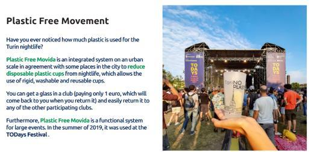

| Examples of Activities Organized by Student Organizations Related to Sustainability |
|---|
|
 |
Examples of activities organized by student organizations related to sustainability at Università degli Studi di Torino, Italy and UiTM Shah Alam, Malaysia.
Additional evidence link (i.e., for videos, more images, or other files that are not included in this file):